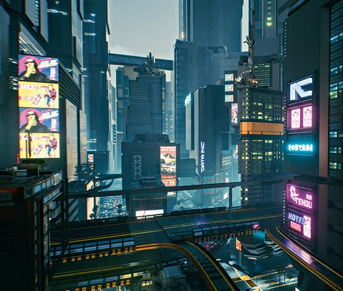
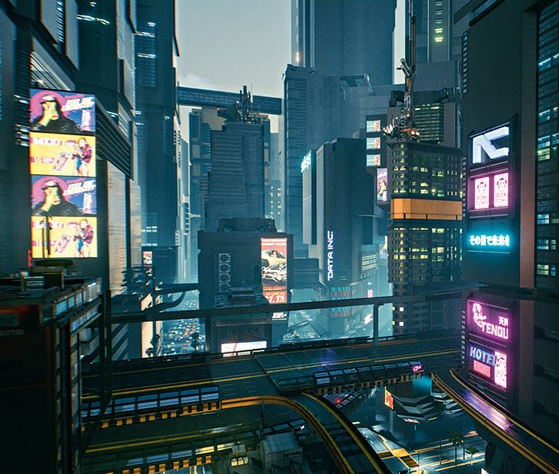

Torres corporatives
Gratacels amb antenes i panells hologràfics.
Explora els efectes visuals i transicions CSS inspirats en Night City
Carregant dades de la xarxa de Night City…
Flux constant de vigilància digital amb rotació i canvi de color.
Animació alternate + infinite
Cada bloc es revela al entrar a pantalla. Inclou fallback si no es suporta.
Gratacels amb antenes i panells hologràfics.
Canals visuals que travessen la ciutat.
Cartells dinàmics i llum vermella al beat.